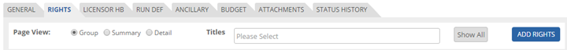
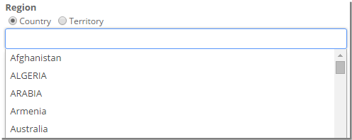
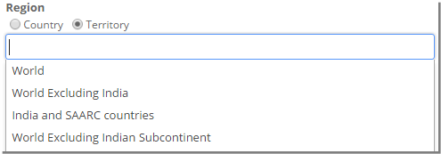
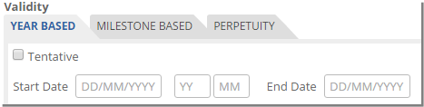

	<section>
		<article>
			<h2>Rights<span></span></h2>
			<div>
				<p></p>
				<p><strong>Adding Rights for Movies</strong></p>

				<p>The rights to any production like a movie represent the right to use that content for exhibiting it on a particular platform in a particular region with particular languages and for a period of time. </p>

				<p>Click Rights Tab</p>
				

				<div class="triangle-border top">				
					
				</div>

				<p>Click Add button, a new page will be displayed as follows</p>
				
				<p>System allows to add multiple movies for multiple platforms or single movie for multiple platforms or single movie for single platform or multiple movies for single platform.</p>

				<div class="triangle-border top">				
					
				</div>
				<p>To select <strong>Title</strong>, click on Select Title drop down which shows list of added titles in General Tab. It looks like as below.</p>
				<div class="triangle-border top">				
					
				</div>

				<p>To select required title, select respective title from drop down. Otherwise, search for title and then select required titles.</p>
				<p>To select required <strong>Platforms/Rights</strong>, check the required Platforms/Rights.</p>
				<div class="triangle-border top">				
					
				</div>
				
				<p>It displays list of platforms in a tree structure. User needs to select respective platforms by selecting the respective check box. Once the platform are selected, click Save Platform to save the selected platforms.</p>
				<p>Check or Uncheck <strong>'Exclusive'</strong> as required.</p>
				<p>Check <strong>Title Language</strong> if it is acquired. Title language will be displayed based upon the titles selected. It can be single or multiple languages.</p>
				<p><strong>Sub Licensing</strong> if selected indicates the rights which are sub licensed will be syndicated or won't allow to syndicate.</p>
				
				<div class="triangle-border top">				
					
				</div>
				<p>Select either Country/Territory in <strong>Region</strong>. Depending on selection the drop down will be populated.</p>
				<p>To select country click on <strong>'Country'</strong> check box and all the countries will be populated in the drop down list. </p>
				<div class="triangle-border top">				
					
				</div>
				<p>It shows list of all countries added in Country master. </p>
				<p>Select required countries by selecting respective from drop down. Otherwise user can search required countries and then select required ones.</p>
				<p>Similarly, Territories can be added for the respective right. </p>

				<div class="triangle-border top">				
					
				</div>
				<p>It shows list of all territories added in Territory master. </p>
				<p>Select required territories by selecting respective from drop down. Otherwise user can search required countries and then select required ones.</p>
				<p>Select <strong>Right Period</strong> as either Year Based or Perpetuity or Milestone by selecting the corresponding radio button.</p>
				<p>If user selects 'Year Based' then user need to give Right Start Date and give Rights End Date which should be greater than start date.</p>

				<div class="triangle-border top">				
					
				</div>
				<p>Selecting Term as <strong>'Perpetuity'</strong> indicates rights as unlimited which doesn't require an end date. User will only select the Start date.</p>
				<p>If user selects <strong>'Milestone'</strong> then user needs to select if its 'Run Based' or 'TC/OC OK' or 'Delivery of Material'. User will enter no of Days/Weeks/Months/Years from 1st Run or from TC/QC OK or from Delivery of Material respectively.</p>
				<p><strong>ROFR</strong> will be applicable when right period is Year based or Milestone (If milestone date is achieved). User can select ROFR trigger date on selection of ROFR check box. No of Days will be auto calculated based on the ROFR Trigger date or the user can enter the no of days.</p>
				<div class="triangle-border top">				
					
				</div>

				<p><strong>Language</strong> has two options - Subtitle and Dubbing</p>
				<p>User can select either a language/s or Language Group/s from the drop down list.</p>

				<div class="triangle-border top">				
					
				</div>
				<p>Select required Subtitle language from drop down. Otherwise user can search required subtitle and then select respective language from drop down.</p>
				<p>Similarly <strong>Dubbing</strong> can be selected. </p>

				<div class="triangle-border top">				
					
				</div>
				<p>Select required Dubbing language from drop down. Otherwise user can search required subtitle and then select respective language from drop down.</p>
				<p><strong>Adding HoldBack for Movies</strong></p>
				<p>User can add holdback for one or multiple movies. Click on "+" icon to add Holdback. It will open pop up as shown below.</p>
				<div class="triangle-border top">				
					
				</div>
				<p>In holdbacks, data will be populated based on data selected in rights.</p>
				<p>Click on 'Platform' to give information about 'Holdback On'. It will display list of selected platforms in current right, select required platforms among these.</p>
				<p>Select Region from the drop down list.</p>
				<p>Select Title Language, Subtitling and Dubbing in Language.</p>
				<p>Holdback Type, select either Release or Date.</p>
				<p>If user selects "Holdback Type" as 'Release', user need to enter 3 sections of information in 'Holdback Date/Period'. 1st section is to enter No. and 2nd section is to select either Days / weeks / Months / Year and 3rd section is to select Release on which Platform, this list box will display only 'theatrical' platform. </p>
				<p>This means that the holdback will remain effective till 2 months on selected platform from Theatrical release of title.</p>

				<div class="triangle-border top">				
					
				</div>
				<p><strong>Note: </strong>- User will be allowed to holdback rights only on 'theatrical' platform.</p>
				<p>If user select "Holdback Type" as 'Date' then user need to enter only release date in 'Holdback Date/Period'.</p>
				<p>Comment can be added in Holdback up to 500 characters. Click on SAVE to save holdback. CANCEL to cancel the save.</p>


				<p><b>Modify or Delete HoldBack</b></p>
				<p>Click on <b>Pencil Icon</b> to modify the Data or Click on the <b>Trash Icon</b> to remove the Hold back.</p>

				<div class="triangle-border top">				
					
				</div>

				<p>It opens record in edit mode along with SAVE and CANCEL button. Make necessary changes and Click on SAVE button for saving the Data.</p>

				<p><b>Adding Blackouts</b></p>

				<p>Blackouts can be defined as the period wherein the acquired rights are not applicable.</p>

				<div class="triangle-border top">				
					
				</div>

				<p>In Blackouts tab click on '+' button</p>

				<p>Select Effective Start Date and End Date. This period should be in between Rights Start and End Date, in case Rights period is perpetuity than there is no validation for blackout period</p>

				<p><b>Modify or Delete Blackouts</b></p>

				<p>Click on <b>Pencil Icon</b> to modify the Data or Click on the <b>Trash Icon</b> to remove the Blackout.</p>

				<div class="triangle-border top">				
					
				</div>

				<p>It opens record in edit mode. Modify the necessary changes and Click on SAVE icon to save the modified Data.</p>

				<p>Click <b>SAVE</b> button to save this right. Click <b>CANCEL</b> to discard the right. </p>

				<p>After saving rights, user will be redirected to rights list page and it will look like this</p>

				<div class="triangle-border top">				
					
				</div>

				<p>There are three types of Page View: <b>Group, Summary and Detail</b>.</p>

				<p>Group View will display rights of multiples movies in a single record provided they were added in a single right. It is the default view.</p>

				<div class="triangle-border top">				
					
				</div>

				<p>Summary View will display rights of each title separately irrespective of rights having multiple titles.</p>

				<div class="triangle-border top">				
					
				</div>

				<p>Detail View will display records based on individual platforms for a movie/s.</p>

				<div class="triangle-border top">				
					
				</div>

				<p>User will select a title/s and click Summary or Detail or Group for the desired type of view.</p>

				<p>Clicking Show All will reset the selection and display all the records.</p>

				<p>User can set the page size using Page size text field.</p>

				<p><i><u>Editing, Updating and Deleting Rights</u></i></p>

				<p>User can edit the rights by clicking <b>Pencil Icon</b> for a particular record. </p>

				<p>On clicking 'Edit', user can modify the right and update the changes. If the particular combination is syndicated than user won't be able to change the combination of right. User can only add more information to the right.</p>

				<p>Similarly, User can delete the right by clicking <b>Trash Icon</b>. User will be prompted to confirm deletion of rights.</p> 

				<div class="triangle-border top">				
					
				</div>

				<p>On this prompt user will click <b>OK</b> to delete the right or click <b>CANCEL</b> if he wants no change.</p>

				<p>User can navigate to other pages by clicking page numbers.</p>

				<p>User can add remarks in the Remarks textfield up to 4000 characters.</p>

				<div class="triangle-border top">				
					
				</div>

				<p><b>Duplicate Combination</b></p>

				<div class="triangle-border top">				
					
				</div>

				<p>When a user creates a duplicate right, the above pop-up will be displayed.</p>

				<p>User can select a title/s in title drop down list to view the conflicting data for that title/s.</p>

				<p>Paging to move across different page and set Page Size as desired.</p>
			</div>
		</article>
	</section>